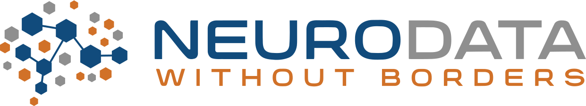

The Neurodata Without Borders (NWB) team is organizing a community hackathon to bring together scientists, research software engineers, and students who want to become involved with NWB development, tool integration, outreach, and/or training by hacking on projects together. This hackathon will enable participants to work intensively on NWB-related projects with the assistance of the NWB development team and others in the community. In addition, we will hold discussions on how best to solve technical and social problems that impact the broader community. The ultimate goals of the event are to foster collaboration and build community support around NWB data standardization.
This is the first NWB hackathon event hosted by the Flatiron Institute, which is home to active projects in the NWB software ecosystem, such as Pynapple, NeMoS, Neurosift, and CaImAn. Hackathon projects can be on any topic, but we encourage projects that relate to NWB integration with these tools.
Please note: This community hackathon is not a training event. There will be no introductory-level talks or lessons that teach attendees on how to use NWB. However, if you are new to NWB, you are still welcome to attend the hackathon. The NWB team provides many video tutorials and online documentation that you can learn from before or during the hackathon. If you want to learn how to convert your data to NWB, we encourage you to attend the virtual NWB Data Conversion Workshop in May 2025.
We encourage participants to stay at the hackathon until the very end - Wednesday at 5:30 PM - to participate in the final project presentations.
Register for the NWB Community Hackathon
Housing support is not provided. We will suggest housing options near the hackathon in April.
Travel support is not provided. Please see the Dates and Location section above for information on when you are expected to arrive and depart the hackathon.
Continental breakfast and boxed lunches will be provided, courtesy of the Simons Foundation.
Site Chair: TBD
Program chairs: Ryan Ly and Matthew Avalyon
The Neurodata Without Borders project is an effort to standardize the description and storage of neurophysiology data and metadata. NWB enables data sharing and reuse and reduces the energy barrier to applying data analytics both within and across labs. NWB has seen wide adoption in the neurophysiology community, and there are now over 300 datasets on the DANDI Archive in NWB, including data from the Allen Institute and the International Brain Laboratory.
The NWB Community Hackathon will bring neuroscientists, tool builders, and research software engineers together to further the development of the NWB software ecosystem, including the data standard, core software packages, official tools, and community tools. Members of the community will exchange ideas and best practices for using NWB and the libraries, share NWB-based tools, surface common needs, solve bugs, make feature requests, brainstorm about future funding and collaboration, and make progress on current blockages.
Note: This event is meant to foster community and collaboration around NWB, not competition. There will be no judges or prizes. Participants are expected to bring their own software tool or data, other relevant project, and/or collaborate with others to build integration with NWB.
TBD
TBD
Please see the Code of Conduct for all NWB events.
This website and related content were prepared as an account of or to expedite work sponsored at least in part by the United States Government. While we strive to provide correct information, neither the United States Government nor any agency thereof, nor The Regents of the University of California, nor any of their employees, makes any warranty, express or implied or assumes any legal responsibility for the accuracy, completeness, or usefulness of any information, apparatus, product, or process disclosed, or represents that its use would not infringe privately owned rights. Reference herein to any specific commercial product, process, or service by its trade name, trademark, manufacturer, or otherwise, does not necessarily constitute or imply its endorsement, recommendation, or favoring by the United States Government or any agency thereof, or The Regents of the University of California. Use of the Laboratory or University’s name for endorsements is prohibited. The views and opinions of authors expressed herein do not necessarily state or reflect those of the United States Government or any agency thereof or The Regents of the University of California. Neither Berkeley Lab nor its employees are agents of the US Government. Berkeley Lab web pages link to many other websites. Such links do not constitute an endorsement of the content or company and we are not responsible for the content of such links.